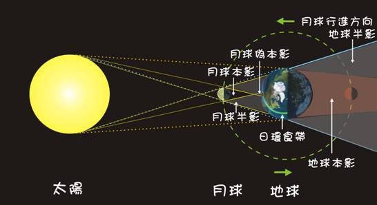

首頁Home
衛星Satellite
蝕 Eclipse
彗星 Comet
程式模擬
連絡我們
前言
在「蝕」我們將會簡單介紹月蝕與日蝕，月球、太陽與地球之間的關係。也會介紹在了解月蝕與日蝕之前，我們必須先知道的一些基本天文小知識。
月蝕簡介
日蝕簡介
什麼是本影、半影與偽本影？
地球和月球都是不發光且比太陽還小的球體，所以在陽光的照射下， 在背向太陽的方向會產生陰影，所產生的陰影可以分為3部分，分別是： 1. 本影：太陽完全被遮蔽的區域。 2. 半影：只有部分太陽被遮蔽的區域。 3. 偽本影：太陽的中心部分被遮蔽，仍然可以看見太陽邊緣的區域。 由於地球的本影長度遠大於地球和月球的距離，所以月球只會通過地球的本影和半影區，而不會通過偽本影。
太陽、地球與月球的相對位置與本影、半影和偽本影之關係
網站製作人員：李佩芸、曾郁婷 更新日期：2010/9/02